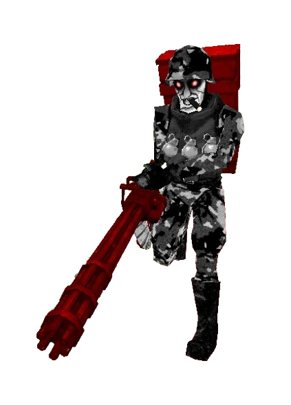

Big Johninator is a hulking figure with whitish-gray skin, glowing red eyes surrounded by dark circles. He dons a black and white flecktarn camouflage uniform, likely suited for snowy or mountainous environments, along with a helmet and matching boots. Over his uniform, he wears a bulky armored vest with a collar, adorned with three grey M67 Fragmentation Grenades. His weapon of choice is a dark red minigun, likely an M61, with the end lacking a shroud and painted a similar shade of red. He also wears a backpack matching his weapon, likely used to carry extra ammo. A lit cigar hangs from his mouth or nose, further contributing to his brutish appearance.
To find Big Johninator, place a blue Skull on the Mannequin body where the player initially found the red skull. This will reveal a hidden passageway on the left, leading to a large, open room. Big Johninator will enter through a missile canister, similar to the enemies encountered in [7-2: LIGHT UP THE NIGHT] and beyond. Upon bursting out, he will destroy the canister, initiating the battle.
Upon defeating him, a silver tablet will rise from the ground, reading the following:
"Dead end after dead end. Is there really no way out?
Get lost in the labyrinth, die in the battlefield, or get lost in the forest...
I thought I saw a way out there, a gate covered by foliage... But even with all our strength we couldn't get through.
I doubt there's any blade sharp enough to cut the vines, and no fire we've tried has been hot enough... It's possible that those flamethrower wielding machines might be able to burn through it, but their weapons become unusable when they die."
Big Johninator is a fast and aggressive enemy, charging at the player while periodically dropping landmines in his wake. He occasionally jumps into the air to avoid damage and change his position. His primary attack consists of launching two three-round bursts of rockets, followed by a hitscan explosion reminiscent of the Malicious Face's charged shot. A unique tactic is to freeze his rockets with the Freezeframe Rocket Launcher, causing them to hit him instead.
Big Johninator can be easily handled with the Freezeframe Rocket Launcher. Simply press the alternate fire key to freeze his rockets, watching as they explode in his face. This is the most straightforward way to defeat him, turning the fight into a joke.
However, if you find yourself without the Freezeframe Rocket Launcher (or forget to bind your fifth weapon slot key), evasion becomes key. Big Johninator’s explosions are fast but avoidable with good timing, so jump around while firing potshots. If you’re familiar with fighting V2, you’ll notice that Big Johninator has the same movement patterns as the red robot, making him easier to avoid.
Big Johninator’s landmines can actually be used as healing sources, though getting close to him is not advisable. His rocket volleys are difficult to dodge, and he has no directly parriable attacks. If you want to survive, focus on evading and taking advantage of the environment to heal using the landmines.
For those daring enough to charge back his Malicious Beam, know that it is possible but extremely difficult due to his high speed and offers little reward in terms of damage. Save your coins for simple damage or railcoining, as charging back Big Johninator’s beam is not the most efficient strategy.